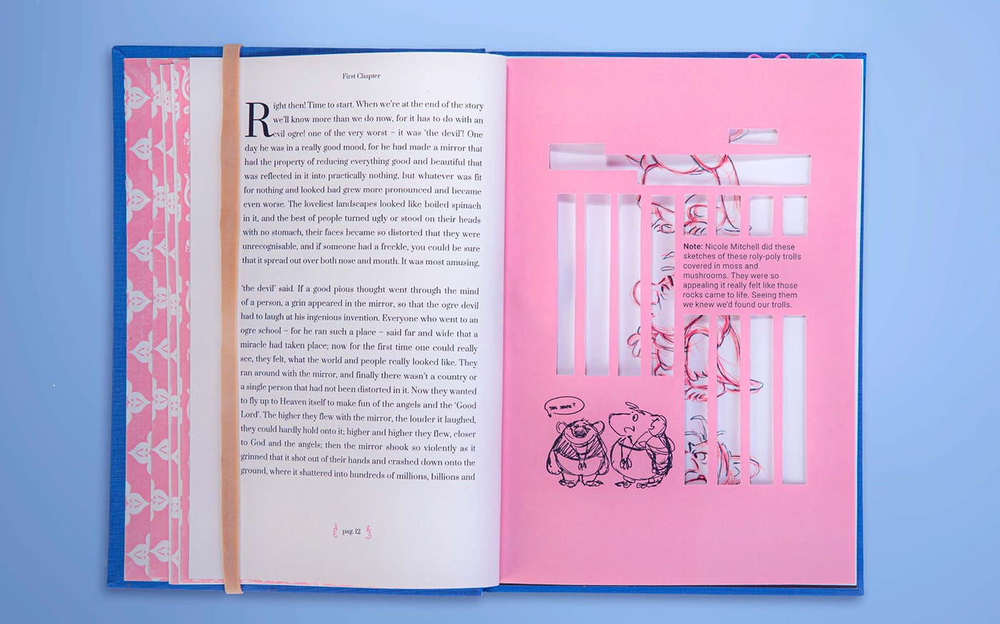
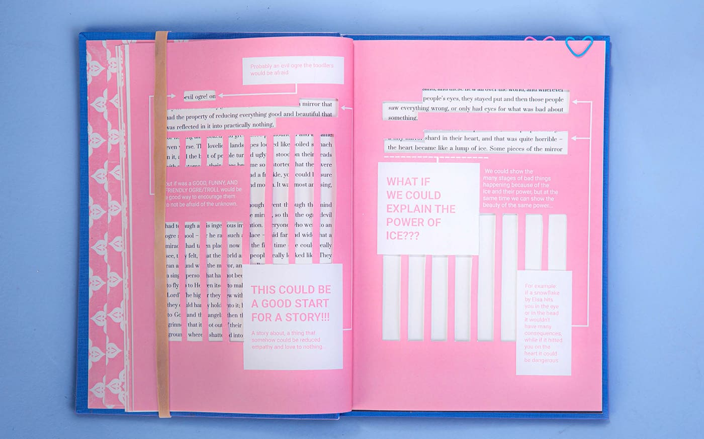

Dichotomy of Fairy Tales
Building a Snowman
This project explores the transformation of traditional fairy tales into modern-day narratives, using The Snow Queen as a starting point. Instead of rewriting the story, it simulates the notebook of an Imagineer working on Disney’s Frozen, highlighting the process of reinterpretation. Through annotated pages, sketches, and cut-outs, it showcases how the original dark themes were reshaped into empowering messages for today's young audiences — shifting from warnings about strangers to lessons in independence and inner strength.




